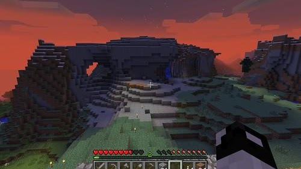
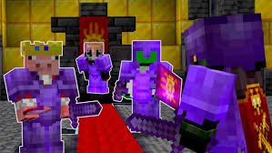
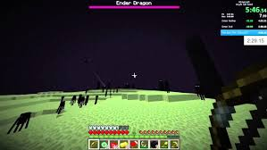
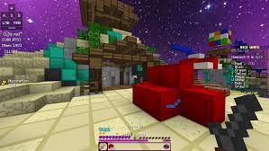

Boost comfort and control for Minecraft sessions.
Minecraft players often benefit from a tighter aiming feel, a stable DPI setting, and a mouse that matches their preferred grip. Small changes can help with block placement, camera movement, and long play sessions.

Find your playstyle
From relaxed building to PvP, choose a setup that feels comfortable and gives you reliable control.
Fast and focused
Clean navigation, lightweight pages, and practical guides that get to the point quickly.
The mice with the most CPS
Minecraft PvP is largely about clicks per second. The Glorious Model O (butterfly and jitter clicking, 0 ms debounce) and the Bloody A70 (drag clicking) give you the highest click-speed potential on ProMouser. Check your own speed with the CPS test, and check your server’s rules first.
Helpful setup ideas for builders and PvP players
Stable DPI
Use a DPI that makes block placement and rotation feel controlled instead of overly sensitive.
Mouse buttons
Bind actions like sprint, use, or swap hotbar slots to reduce hand strain during long sessions.
Build comfort
Choose a mouse with enough control for precise placement and enough surface area for comfort.
Click comfortably
Clicking techniques are optional. Prioritize control, comfort, and your server's rules over chasing a high CPS number.
Find a mouse that fits the way you play
You do not need a specialized mouse for every Minecraft mode. Start with comfort and control, then consider extra buttons or clicking styles only if they suit your goals and are allowed on the servers you play.
Casual play
Most players can use a comfortable, reliable budget mouse. Choose a shape that feels natural and a sensitivity that makes building and camera movement easy to control.
1.8 PvP

Consistent aim and timing matter alongside click speed. Some players practice butterfly clicking or other techniques, but higher CPS is not a substitute for control. Check server rules before using clicking techniques that create unusually high rates.
1.9 PvP and SMP

These modes generally place less emphasis on rapid clicking than 1.8 PvP. A comfortable mouse with predictable tracking works well; any extra clicking speed is a personal preference, not a requirement.
Bridging and speedrunning

Some players use drag clicking for particular bridging techniques or clutch attempts. It can be inconsistent, and high CPS is not required for every route or strategy. Prioritize a stable grip and practice safely.

Glorious Model O
A lightweight option some players consider for fast movement and butterfly clicking.
View mouse guide
Bloody A70
An example to compare if you are interested in drag-clicking, subject to your comfort and server rules.
View mouse guideOne setup for everything
There is no single best mouse for every player or mode. If you play several styles, choose a comfortable all-rounder with reliable tracking and buttons that are easy to reach without straining.
Use the tools to refine your setup
Whether you want to compare click speed or tune your grip, the rest of the site is built to give you practical next moves without overcomplicating the process.
Visit the test hub